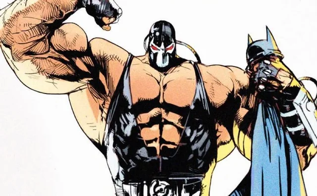

Joker The Crown Prince of Crime is Batman's ultimate archenemy. If Batman represents absolute order, logic, and justice, the Joker represents pure chaos, madness, and nihilism. He doesn't care about money or power; his only goal is to prove that everyone—including Batman—is just one bad day away from insanity. Why He’s a Threat: Completely unpredictable and fiercely intelligent, the Joker has inflicted more personal trauma on Batman than anyone else. From paralyzing Barbara Gordon to brutally murdering Jason Todd, he is the dark shadow that Batman can never truly outrun.

Ra's al Ghul The Global Mastermind: Known as the "Head of the Demon," Ra's al Ghul is an immortal eco-terrorist who has lived for centuries by rejuvenating himself in the mystical Lazarus Pits. He commands the League of Assassins and views humanity as a cancer that must be culled to save the Earth. Why He’s a Threat: Ra's operates on a global scale that dwarfs Gotham's local mafiosos. He is one of the few villains who knows Batman's secret identity and respects him immensely, often viewing Bruce Wayne as the only worthy heir to his empire—making their battle deeply personal and philosophical.
.png)
Two-Face (Harvey Dent) The Fallen Ally: Once Gotham City’s brilliant and heroic District Attorney, Harvey Dent was one of Bruce Wayne’s closest friends and Batman's greatest ally in the fight to clean up the city. After a mob boss threw acid in his face, scarring half his body, Dent's latent mental fractures tore open, turning him into a villain obsessed with duality and chance. Why He’s a Threat: Two-Face leaves every decision—life or death, good or evil—to the literal flip of a scarred two-headed coin. For Batman, fighting Two-Face is a constant psychological torture, as he is forced to fight the monster his friend became while holding onto a desperate hope for Harvey's redemption.

Bane The Intellectual Rival: Driven by an intense, neurotic fixation on superiority, Edward Nygma believes he possesses the greatest mind on Earth. He turns crime into a series of elaborate, high-stakes puzzles, leaving clues and riddles at his crime scenes because his ego demands he prove he is smarter than the police and the Batman. Why He’s a Threat: While other villains challenge Batman's physical limits, the Riddler directly challenges his title as the "World's Greatest Detective." His deadly deathtraps and psychological mazes force Batman to rely purely on his intellect, making every encounter a high-stakes chess match where a single mental slip-up means death.